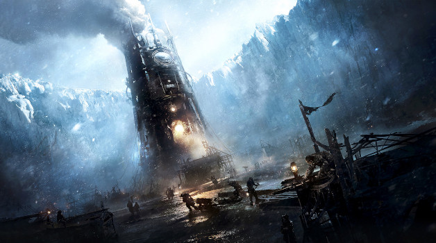
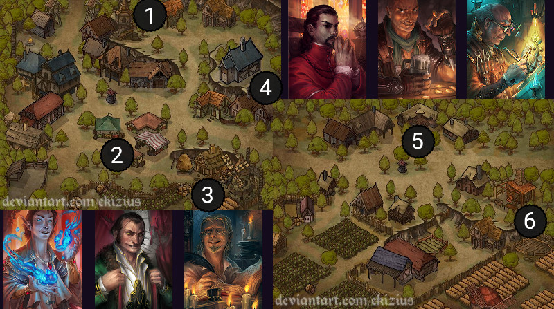
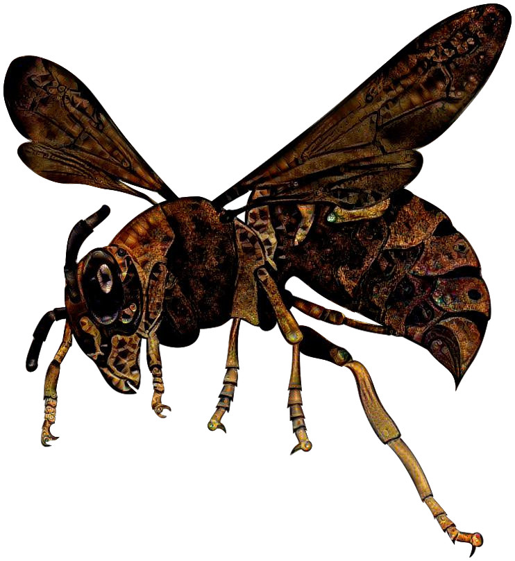
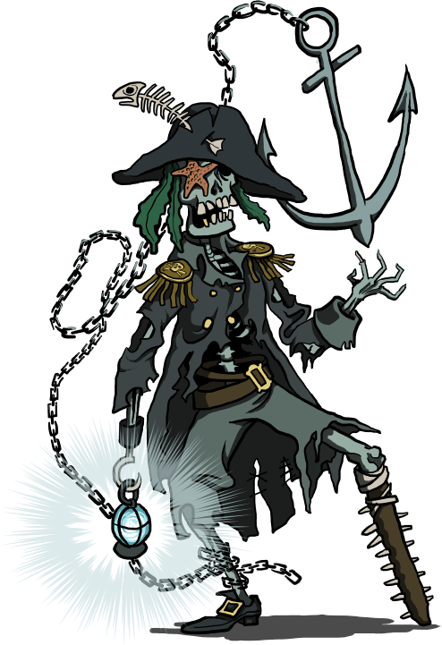

Scénarios pour Run. Die. Repeat.
🏃 ☠️ ♻
Version PDF: …
Ce document rassemble une dizaine de scénarios conçus pour le jeu de rôle Run. Die. Repeat. créé par Labrys Games (traduction en français).
- Le camembert de la sorcière
- Frostpunk
- Dishonored
- Parasite
- Dernier wagon pour l’amour
- Enquête sous pression à ValTordu
- Pirates, vaudou et île au trésor
Un grand merci aux playtesteurs : Aurélien, Elliot, Estelle, Henri, Kevin, Laëtitia, Maxime, ainsi que les joueurs & joueuses qui ont testé ces scénarios lors de la 2e CyberConv : Amaethys, Menida, MiniPen, romook, Beru, Failix, Komurin, Vii, Orion, Thomas B., Vicha, Vixenn.
Merci également à ces illustrateurs qui ont déposé leur magnifique travail sous licence Creative Commons :
- Halloween Witch face profile by scottepentzer - CC BY 3.0
- Corvo by Fernand0FC - CC BY-NC 3.0
- UBD Corpse Mite by Larvae801 - CC BY-NC 3.0
- Kaneda by Fernand0FC - CC BY-NC 3.0
- «Estación de tren» by Dumaker - CC BY-NC-SA 3.0
- Roof (end) by Hunternif - CC BY-NC-SA 3.0
- Comic El Santo Lucha Libre de pexels.com
- Perso riding on vehicule de pexels.com
- Light Inside Library de pexels.com
- red poppy flower on gray train rail with gray stones at daytime de pikrepo.com
- Fancy Finn, Flame Princess Old Dress & Finn Chaotic Evil by SIRCollection - CC BY-NC-SA 3.0
- mechanical wasp made by DeepDreaming a wasp clipart with a steampunk background
- Map - Small Town & Map - Village by Ekizius - CC BY-NC-SA 3.0
- Fantasy portraits by TinySecretDoor - CC BY-NC 3.0
- Pirate Skeleton by Blondbraid - CC BY-NC 3.0
Merci enfin aux développeurs des logiciels libres que j’ai employé : Firefox, Gimp, NodeJS, markdown-it, Python, puppeteer, Notepad++, Sumatra PDF. Les fichiers sources ayant permis de générer ce PDF sont disponibles sur GitHub.

Ces scénarios sont publiés sous licence Creative Commons Attribution 4.0 International.


Le camembert de la sorcière
Vous êtes un petit renard habitant la forêt. Cachée au cœur de cette forêt, vit une sorcière. Elle est plutôt gentille avec les animaux… tant qu’on ne la met pas en colère ! Ce matin, vous l’avez vu sortir de sa cave de magnifiques camemberts… Et puis elle est partie faire ses courses au marché. Le camembert, c’est votre plat préféré ! Alors c’est décidé, vous allez lui en chaparder un… Mais attention aux champignons magiques qui poussent dans sa chaumière !
Objectif
Chaparder un camembert et s’enfuir avant que la sorcière ne revienne.
Règles spéciales
Les enfants lancent deux dés à 6 faces pour chaque jet, les adultes un seul.
Environnement
- les camemberts sont posés sur la table de la cuisine, qui comporte plusieurs étagères et un plan de travail.
- la fenêtre de la cuisine est fermée, mais les fenêtres de pièces donnant sur la cuisine sont ouvertes :
- la chambre de la sorcière, où il y a des coussins, un bureau, et le corbeau de la sorcière, qui dort
- le salon, où il y a une petite table, des fauteuils, et des plantes carnivores en pot
Obstacles
- tout le sol de la maison de la sorcière est recouvert de champignons magiques, qui, si on les touche, font disparaîte puis réapparaitre au-dehors !
- une fois un camembert en possession du renard, le corbeau de la sorcière se réveille ! Il pourchasse le renard en croassant, et risque de donner l’alerte !
Conseils à la MJ
J’ai testé ce scénario avec un enfant de 4 ans et ses parents :
- 20min de temps me semble un grand maximum pour parvenir à conserver l’attention d’un enfant durant toute la partie.
- décrivez bien les lieux avant de lancer le compte à rebours.
- employez un compte à rebours à aiguilles, pour que les enfants puisse facilement visualiser le temps restant, comme celui-ci : https://www.visnos.com/demos/classroom-timer
- il peut être difficile pour les enfants de comprendre que toutes les joueuses jouent le même personnage. N’hésitez donc pas à vous rabattre sur un modèle 1 joueuse = 1 personnage, avec une famille de renards. On se rapproche alors du système de Donjons & Chenapans
Rejouer le scénario
Ajoutez un chien qui dort dans sa niche, et qu’il ne faut pas réveiller, mais donnez un dé de plus aux enfants.

 Image de couverture du jeu vidéo Frostpunk par Jakub Kowalczyk
Frostpunk
Fin du XIXe siècle. Une éruption cataclysmique a déclenché un hiver permanent. Vous avez pris la tête d’un groupe de survivants et êtes parti au nord, vers une terre promise. À bout de forces, vous avez atteint un étrange monolithe mécanique, une chaudière géante. Vos ingénieurs comprennent cette technologie steampunk juste assez pour le rallumer, ravivant un espoir. Mais le plus dur reste à venir pour votre colonie d’une trentaine d’âmes…
Objectif :
Survivre jusqu’à établir une colonie pérenne.
Inspirations :
Le jeu vidéo éponyme
Règles spéciales
Les joueuses incarnent le capitaine de la colonie, et prennent des décisions à cette échelle, mettant en mouvement des dizaines de personnes.
Due à l’inertie de groupe, chaque joueuse ne peut commander qu’une tâche majeure par demi-journée. Chacune donne lieu à un jet de dé. Au terme de chaque journée, la nuit tombe, glaciale, et l’aube révèle une nouvelle difficulté…
Si la MJ estime qu’une action des joueuses ravive l’espoir de la colonie, elle peut octroyer un bonus de +1 au jet suivant.
Environnement
Des montagnes ensevelies sous la neige, à perte de vue, et un vent glacial, plusieurs degrés sous le zéro Celsius. Un filon de charbon peut être découvert à proximité, ainsi que des automates steampunks en sale état, qui devaient servir à entretenir la chaudière. Galerie d’illustrations issues du jeu vidéo. Votre colonie est constituée d’individus robustes, mais à bouts de forces. Les survivants incluent deux ingénieurs, des trappeurs, une femme médecin, un prêtre, un botaniste, une institutrice, et quelques enfants.
Difficultés
- JOUR 1: la nuit, la température chute drastiquement : vos citoyens ont besoin d’abris
- JOUR 2: vos citoyens meurent de faim par manque de nourriture, et le stock de charbon baisse dangereusement
- JOUR 3: le générateur tombe en panne, et des vols de nourriture ont lieu dans les réserves
- JOUR 4: une épidémie de peste se déclare, et une avalanche a isolé des dizaines de personnes dans la mine de charbon qui a été découverte
- JOUR 5: des citoyens appelent à la rébellion et veulent repartir d’où vous venez
- (JOUR 6: ils attaquent ! Des morts vivants, ou pire ?)
Autres événements
- un autre groupe de survivants à été aperçu dans les montagnes. Faut-il leur porter secours et les acceuillir, alors qu’une tempête approche ?
- découverte d’un chemin de fer. Un train y circule sans s’arrêter.
- une stèle est exhumée comportant une inscription runique. Si du temps est consacrée à la décrypter, elle révelera l’emplacement de Nidhiver, une ville prévue pour résister à l’hiver permanent. Elle est à seulement un jour de marche, mais cette terre promise se révelera un faux espoir, car la colonie la découvrira en ruines !

Dishonored
Dunwall. Une ville victorienne steampunk frappée par une terrible épidémie de Peste du Rat. Vous êtes Corvo Attano, le protecteur personnel de l’impératrice Jessamine Kaldwin. Alors que vous accompagnez celle-ci, soucieuse de la situation, et sa fille Emily lors d’une balade dans les jardins du palais, vous êtes attaqués par un groupe d’assassins ! L’impératrice est tuée, sa fille enlevée. Vous avez assisté de vos yeux à la scène… mais vous avez conclu un pacte avec un mystérieux sorcier, et vous voici de retour à cet instant, avec cette fois d’étranges pouvoirs, et l’intention de changer l’histoire !
Objectif
Amener l’impératrice et sa fille en sécurité au palais.
Règles spéciales
La joueuse choisit deux capacités au début de chaque run :
- Clignement : déplacement instantanné sur une distance de quelques mètres. Une seule personne peut vous accompagner.
- Nuée dévorante : invoquez une meute de rats
- Possession : prennez possession de quelqu’un
- Pli temporel : relentissez le temps quelques secondes
- Coup de vent : déclenchez une violente bourrasque ou faites léviter des choses
- Ombre errante : vous vous fondez dans les ombres
Chaque pouvoir procure un bonus de +2 si exploité, et ne peut pas être employé pour 2 actions de suite.
Environnement
- vous commencez dans un kiosque en marbre de 10m de large, à la pointe d’une falaise surplombant la baie de la ville
- 2 chemins permettent de rejoindre la terrasse du palais : un long labyrinthe végétal, ou plus court, un escalier abrupt dans la roche, prolongé par une corniche
Obstacles
- de manière générale, les assassins tenteront de tuer l’impératrice, d’enlever Emily, et d’éloigner ou neutraliser Corvo.
- dès le début 5 assassins sortent des fourrés et vous assaillent. Armés de sabres, 2 attaquent Corvo, 2 se chargent de l’impératrice et sa fille, et le dernier reste en retrait pour vous canarder avec une arquebuse (si on lui court dessus, il n’a le temps de tirer que 2 fois). Corvo ne peut pas simultanément empêcher le meutre de l’impératrice et l’enlèvement d’Emily. Une fois la première protégée, il peut partir à la poursuite du ravisseur de la seconde.
- le ravisseur d’Emily l’entraine jusqu’à un bateau accosté au pied de la falaise, que l’on atteint en descendant une corde
- le long de la falaise, vers le palais, 3 brutes barrent l’étroit chemin, couverts de pustules de la Peste. Ils sont armés d’un gourdin, d’une hache et d’une lance.
- dans le labyrinthe, 2 autres assassins tenteront de prendre par surprise leurs proies à travers les buis composant le labyrinthe. Ceux-ci sont armés de dagues et possèdent les pouvoirs Clignement & Ombre errante.
- le lord régent Hiram Burrows est à l’origine du complot. Il tentera en dernier recours, en voyant l’impératrice arriver au palais, de saisir un gant de contrôle électrostique pour lancer un garde mécanique à l’assaut.
Conseils à la MJ
- interrompez le run dès que l’impératrice ou sa fille meurent
- un sabre à la main, l’impératrice peut se défendre seule quelque temps. Elle cherchera d’abord à protéger sa fille, puis à rejoindre le palais. Elle fait confiance au lord régent.
- bien qu’agile et futée, Emily Kaldwin se fait rapidement assomer. Elle se méfie du lord régent, et si elle est consciente à la fin, destabilisera le garde mécanique en lui lançant un seau d’eau.
- le but de la règle de la capacité au choix est de tenter les joueuses d’essayer plein de pouvoirs différents, avec comme conséquence de ne pas pouvoir réutiliser les actions réussies par les autres, et donc de rendre la progression difficile !

Parasite
Vous êtes un parasite microscopique, une arme bactériologique créée dans un laboratoire top secret. Suite à une énième hybridation, vous venez d’acquérir une vive intelligence, la conscience de vous-même, et la capacité à remonter le temps ! Vos enfants vont éclorent de votre ventre dans 30min, ce qui signifiera votre mort, mais vous êtes bien décidé à ce qu’ils naissent hors de cette prison !
Objectif :
S’échapper du laboratoire.
Règles spéciales
En taille, le parasite fait moins d’un millimètre. À son échelle, il se déplace très vite : environ 1cm / seconde.
Le parasite peut rentrer sous la peau d’un hôte, pour en prendre le contrôle. Il peut également se dissocier, se dupliquer en de multiple individus, mais les doubles ne restent sous le contrôle des joueuses qu’en cas de jet réussi.
Environnement
- vous débutez dans une salle blanche. Elle contient divers appareils électroniques (ordinateurs, microscopes, séquenceur ADN…), un espace de stockage des spécimens (rats et chauve-souris), un incinérateur, un grand nombre de produits chimiques et une bouche d’aération au plafond.
- la seule sortie est un sas donnant sur une salle de pause / réunion avec kitchenette et tableau blanc. Son seul autre accès est un ascenseur. La pièce comporte une caméra de sécurité et un garde.
- en-dehors de ce dernier, le personnel est constitué de 3 scientifiques en combinaison totale. Aux yeux du parasite un jeune mâle brun, une femelle rousse et un vieux mâle blond.
- l’ascenceur dessert directement le hall principal, assez imposant dans un style greco-romain chargé de marbre et d’or, où trone un bureau d’accueil massif. La sortie à l’extérieur se fait par une simple porte vitrée coulissante, mais le bureau de la sécurité est juste à côté et héberge quatre gardes vifs et à la gachette de taser facile.
Obstacles
- le scénario démarre au moment où le parasite vient d’être aspergé d’une substance, dans une boîte de pétri, sous un microscope.
- survivre à la traversée du sas désinfectant requiert une combinaison totale. Un scanner rétinien permet d’y entrer.
- comportement des PNJs si danger (la MJ peut choisir) :
- ⚀-⚁ détruire le parasite quitte à y laisser leur vie
- ⚂-⚃ fuir pour sauver leur peau à tout prix
- ⚄-⚅ (scientifique) aider le parasite qu’ils identifient comme une nouvelle forme de vie consciente / (garde) échapper du complexe avec un échantillon du parasite pour le revendre
Conseils à la MJ
Encouragez vos joueuses à prendre possession d’un animal ou d’un humain : c’est fun et c’est un bon moyen de se s’évader !
Lorsque le parasite atteint un hôte potentiel, ne demandez pas aux joueuses de jet pour en prendre le contrôle : c’est automatique.
Dernier wagon pour l’amour
Étudiant, vous avez 22 ans, et cet été un petit boulot vous a ammené dans la campagne angevine. Vous logez dans une chambre sous les toits, dans un petit village le long de la Loire. Tous les soirs, physiquement fatigué mais joyeux, charmé par la campagne bucolique, vous rentrez à pieds à travers champs jusqu’à votre village. Et chaque soir, dans l’escalier, vous croisez invariablement votre voisine, et votre coeur s’emballe… Ses cheveux courts, sa démarche les regards que vous échangez… Il y a à chaque fois quelque chose d’électrique dans l’air !
Vous avez échangé quelques mots, partagé un café sur le palier, et même êtes allez courir ensemble une fois… Mais vous n’avez pas encore franchi le pas de lui déclarer votre flamme. Ce soir pourtant, c’est décidé, votre coeur bat la chamade : vous allez l’inviter à diner ! Mais alors que vous arrivez à votre logement, un bouquet de fleurs sauvages sous le bras, votre logeuse vous annonce que Marion vient de partir pour la gare, ses bagages à la main !
Objectif
Rattraper Marion et lui déclarer votre flamme !
Règles spéciales
Un résultat qui n’est pas 6 ne signifiera pas la mort, mais un run qui s’interrompt car aucune histoire d’amour ne pourra naître : un train râté ou une approche des joueuses trop pataude, qui rebute Marion.
Environnement
- votre logeuse est une très gentille septuagénaire. Ses soupçons sur le crush que vous avez envers Marion se confirment en voyant le bouquet : se désolant de vous voir si dépité, elle vous proposera sa bicyclette !
- la gare est à environ 1km
- en étant agile, il est possible de monter dans le train en marche
Obstacles
- un troupeau de vaches sur la route jusqu’à la gare
- deux policiers sont à la gare, et vous n’avez pas de masque
- le train est en train de partir !
- le contrôleur dans le train, qui est plein à craquer de vacanciers
- un blond sportif bien habillé est sur le point de l’aborder !
Conseils à la MJ
Commencez la partie en demandant aux joueuses de choisir le prénom de leur personnage.
Demandez des jets aux joueuses pour savoir s’ils ont pensé à prendre leur masque, ou de quoi payer leur billet, si elles ne pensent pas à les prendre en partant de leur logement !
Face à Marion, laissez chaque joueuse décrire comme elle s’y prend et interprêter l’échange verbal, puis demandez un jet de dé qui sanctionnera la réussite de l’approche ! Réussir à obtenir un diner de Marion est d’autant plus délicat qu’elle vient d’apprendre un décès familial, raison de son départ précipité…
Variante
Chaque fois que le protagoniste râte une action, enterrant tout espoir de de love story avec Marion, il meurt, victime d’un arrêt cardiaque !


Enquête sous pression à ValTordu
Aventurier un peu roublard, votre réputation de bandit au grand cœur n’est plus à faire. Vous êtes un peu le Arsène Lupin itinérant des Royaumes Magiques. Alors que vos pas vous mènent à un petit village, ValTordu, une guêpe mécanique vous attaque ! Vous avez tout juste le temps d’activer votre pendentif enchanté avant que ce minuscule automate volant ne vous transperse mortellement. Heureusement le sortilège fonctionne : pendant 45min, une boucle temporelle vous protège de la mort. Durant ce laps de temps, il va vous falloir trouver qui dans ce village a commandité votre meutre, tout en fuyant cet insecte assassin indesctructible qui vous talonne !
Objectif
Trouver un moyen de rompre l’enchantement de cette guêpe mécanique assassine, en découvrant qui l’a lancé contre vous !
Règles spéciales
Employez cette application web afin de progressivement révéler les lieux à vos joueuses : communiquez leur l’URL publique qui s’affiche en bas une fois la table de jeu créée, puis révélez leurs les zones hachurées en cliquant sur chacune au fil de la partie.
La guêpe mécanique
Mi-automate, mi magique, cette crétaure n’a qu’un seul but : vous tuer. Elle est hyper-résistante, et son dard est capable, à l’usure, de transpercer n’importe quelle matière. De plus, elle est immunisée à la magie et aussi rapide qu’un homme en pleine course. Lorsqu’un ⚅ est obtenu pour s’en débarasser, le guêpe peut être temporairement bloquée quelque part. Cela laissera aux joueuses le temps d’accomplir 2 actions, mais elle reviendra toujours, tel un Terminator miniature.
Le mobile
C’est Erneste qui a lancé la guêpe tueuse contre notre héro. Erneste a appris son arrivée hier soir à la taverne grâce à Marko, puis a volé à Sirius la boîte renfermant l’insecte assassin.
Pourquoi ? Il est jaloux de sa notoriété, dont tout le monde croit qu’il s’est inspiré pour ses romans, et c’est aussi le frère d’un armateur que le héro a plumé et ruiné il y a quelques mois.
Les personnages
- Faraday le magicien, dans son temple (petite tour au nord-ouest) est en train de méditer, son esprit plongé dans un autre plan astral. Il n’appréciera pas être dérangé, et en l’absence d’une justification rapide qui lui plaise, il enverra valdinguer d’une bourrasque magique protagoniste & guêpe à travers la place jusqu’à l’église ! Le choc sonnera la guêpe quelques dizaines de secondes, et attirera l’attention de Sirius.
La spécialité de Faraday est la maîtrise des 4 éléments : air, eau, terre, feu. Il est très orgueilleux et sera sensible à la flatterie. Une fois amadoué, il sera curieux environ 30s d’examiner la guêpe : il identifiera rapidement qu’il s’agit d’une création de Jacques, « de la belle ouvrage ! » puis annoncera à notre héro que le seul moyen de l’arrêter est de retrouver le coffret d’où elle est sortie, avant de s’en désintéresser complètement. Il méprise quelque peu les autres villageois, en dehors d’Erneste et de Jacques, qu’il tient en bonne estime. Contre une généreuse compensation (du jus de Sapho ?), il est capable de relancer la bulle temporelle du médaillon pour 15min : attention à déclencher cet effet au bon moment !
-
Douglas le maire, au marché, est un ancien aventurier, tour à tour mercenaire, marin, diplomate… Après avoir fait fortune de manière obscure, il s’est « rangé », devenant notable de cette petite bourgade. Beau parleur et chaleureux en apparence, il souhaitera aider notre héro, qu’il connait de réputation et qu’il alpaguera à son passage place du marché, mais ne cherche en réalité qu’à l’éloigner au plus vite de ValTordu : officiellement à cause de cette guêpe qui effraie tout le village, mais aussi pour le tenir loin de son trafic… Il l’orientra donc assez vite vers Jacques, ou tout autre habitant dont l’aide semble pertinente. Sa demeure, composée de trois bâtiments, se trouve à l’ouest, avec juste au sud un enclôt pour ses chevaux. Le bureau de Douglas contient des preuves du trafic et de ses liens avec la pègre, ainsi qu’un paquet de fric.
-
Erneste le poète, au moulin, est un auteur à succès et un grand séducteur. Il est terrorisé par la guêpe, dont il sait qu’elle rôde même si le protagoniste vient seul. Il aura une attitude étrange, manifestant tantôt une certaine antipathie envers le héro, tantôt curieux d’en apprendre plus sur lui… En entrant dans le moulin, le protagoniste reconnaitra certains livres dont son habitant est l’auteur : le héro a entendu dire qu’Erneste s’était inspiré de sa réputation pour en écrire certains ! En fouillant un peu plus, il reconnaîtra aussi sur un tableau de famille le visage du frère d’Erneste, une de ses anciennes victimes. Enfin, un jet de fouille réussi permettra de découvrir le coffret-foureau de la guêpe, cachée dans sa cheminée.
-
Sirius l’évêque, à l’église (bâtiment bleu au nord) est homme beau, strict et ténébreux. Il exprimera une bienveillance froide envers le héro, cherchant sans entrain à l’aider.
C’est lui qui a commandé la guêpe à Jacques, comme mesure de protection envers Douglas, dont il se méfie. Il ne sait pas qu’Erneste lui a volé, mais se doutera de quelque chose dès qu’il la verra en vol. Il sait que le frère d’Erneste s’est fait plumer par le héro, et n’hésitera pas à le mentionner.
Une fouille sacristie permettra de trouver un reçu de commande de la guêpe à Jacques. Confronté au sujet de cette commande, il révelera qu’on lui a volé la guêpe cette nuit même, et n’appréciera pas que des soupçons pèsent sur lui, à ce sujet ou à propos du trafic de Sapho : dans les deux cas, il deviendra menaçant, et si l’intimidation ne suffit pas, il ira jusqu’à soulever tout le village contre le héro, en l’accusant d’être possédé !
-
Marko le mercenaire, à la terrasse de la taverne (au nord de la place du puit), apostrophera le héro par son nom dès qu’il le verra arriver sur la place du puits. Bien que déjà un peu saoul, il n’a pas oublié pourquoi il est ici : il vous attend de pied ferme depuis 2 jours, se doutant que vous passeriez par ValTordu. Il vous en veut, s’estimant floué sur sa part du butin lors d’un « coup » où vous aviez fait équipe, et réclamera compensation sous peine d’en venir aux mains ! Il n’a rien à voir avec la guêpe tueuse, mais c’est lui qui a donné l’information à Erneste que vous étiez en chemin pour ValTordu.
-
Jacques l’horloger, à la forge-atelier (à l’est) est un brillant ingénieur et alchimiste. C’est lui qui a conçu la guêpe tueuse, ainsi que bon nombre d’autres automates enchantés, qui l’assistent dans son atelier ou labourent les champs près de chez lui. En bon professionnel, il ne souhaitera pas révéler son commanditaire, mais si le protagoniste fait preuve de persuasion, il révelera qu’il s’agit de Sirius. La présence de la guêpe ne le dérange pas, mais il n’admettra pas de désordre dans son atelier. Il indiquera au héro que le seul moyen d’arrêter la guêpe est de retrouver son fourreau.
Environnement
La partie commence dans le coin nord-ouest de la carte.
Le village est très vivant, des gamins et des poules courrent dans tous les sens, les marchands hélent les passents joyeusement, des agriculteurs labourent en sifflotant…
Trafic de jus de Sapho
Douglas a mis en place une exploitation de Sapho, une racine dont le jus est une drogue décuplant les facultés mentales, qui se vend à prix d’or au marché noir. Les champs sont au sud-est de la carte et son labourés par des automates de Jacques. Le protagoniste reconnaîtra immédiatement la plante si les cultures sont examinées.
Sirius est également très impliqué dans ce trafic : il sert de couverture, prétendant que le Sapho est exploité pour les besoins de l’Église de l’Autorité, et rassurant ses ouailles de la paroisse au moindre soupçon.
Les racines sont broyées dans la ferme juste à côté. Tout se déroule sous la surveillance d’un seul homme, un solide gaillard muet servant fidèlement Douglas. Fouiner dans la ferme signifie attirer l’attention de ce « fermier » aggressif, mais peut permettre de trouver des éléments impliquant Douglas & Sirus dans le trafic : missives signées de Douglas attestant réception du « paiement » ou de « la marchandise », fausse attestation de l’Église de l’Autorité, noms de traffiquants de Sapho connus du héro…
Jacques est au courant du trafic, vendant les services de ses automates de labour à Douglas, mais il nierra savoir quoi que ce soit. Faraday, lui, a vendu son silence contre une dose régulière de jus de Sapho, dont on peut trouver des bouteilles au temple.
À la fin
Si les joueuses confrontent Erneste avec leurs soupçons, il craquera et avouera son rôle. Le coffret-foureau de la guêpe peut aussi être découvert chez lui en fouillant : en activant la petite boîte à musique qu’il contient, la guêpe viendra s’y lover paisiblement. C’est alors une victoire. La joueuse qui avait la parole raconte un épilogue en quelques phrases, qui peut ensuite être complété par les autres joueuses.
Sinon, à la fin des 45min, la bulle temporelle s’interrompt, et le héro joue sa dernière vie. Cette fois, s’il meurt, c’est le GAME OVER.
Conseils à la MJ
Commencez la partie en demandant aux joueuses de voter pour le nom de leur personnage. Sur Discord, vous pouvez employer cette commande :
/poll "Comment vous appelle-t-on ?" "Damian 'Sweetongue' Hades" "Lindsey Darrow dit 'Monte en l'air'" "Aonghus. Just Aonghus"
Lorsque les joueuses croisent l’un des 6 PNJs, révélez son portrait. Lorsqu’elles découvrent l’un de leurs noms, révélez-le même si elles ne l’ont pas encore rencontré. Évitez d’introduire d’autres personnages que les 6 PNJs présentés.

Pirates, vaudou et île au trésor
🏴☠️ Capitaine pirate redouté, vous avez mis la main sur la carte au trésor de Robinson Crusoé, le mythique naufragé, sur l’île duquel un formidable trésor se cacherait ! Malheureusement, votre équipage s’est mutiné et vous a fait subir le suplice de la planche 😡 Votre amulette vaudoue vous a sauvé, et vous êtes de retour parmi les vivants jusqu’à la nouvelle pleine-lune 🌕 Vous vous êtes associé avec un savant un peu fou et pilote de dirigeable pour devancer votre ancien équipage et mettre la main sur le magot en premier ! 💰
Vous voici maintenant dans la grotte du trésor, au sommet du volcan de l’île. C’est le crépuscule, d’ici quelques minutes la pleine lune se lèvera et vous redeviendrez mortel. Vous venez d’enterrer votre amulette sur place afin qu’aucune malédiction vaudoue ne vienne vous hanter une fois que vous aurez quitté cet archipel… Alors que vous vous remplissez les poches de pierres précieuses, vous entendez vos anciens camarades pirates à l’entrée de la caverne !
Objectif
Quitter l’île riche avant de redevenir mortel !
Inspirations
Monkey Island & Pirates des Caraïbes
Règles spéciales
Avant de lancer la partie et le compte à rebours, demandez aux joueuses de baptiser leur capitaine pirate.
Durant la partie, chaque fois que les joueuses décrivent leur action en faisant rimer leur phrase, elles obtiennent un bonus de +1 au jet de dé. Elles gagnent un bonus de +1 supplémentaire si elles font rimer leurs vers avec le nom du capitaine !
Le capitaine pirate est une sorte de mort vivant, mais il n’en gagne aucune immunité : il reste sensible aux coups et blessures. Son enveloppe corporelle garde juste des séquelles visibles de toutes ses morts précédentes…
À chaque fois que le capitaine décède, il remonte le temps jusqu’au moment où il a enterré l’amulette vaudoue. Notez que si les joueuses décident de déplacer l’amulette ailleurs, cela déplacera cette « ancre temporelle », et le run débutera à un autre endroit, un peu plus tard dans la trame chronologique !
Environnement & obstacles
-
La grotte au trésor : le trésor est gigantesque et les joueuses peuvent y dénicher à peu près tout ce qu’elles y cherchent. La caverne ne possède qu’une seule autre sortie, qui donne sur un torrent : si l’on n’y trouve pas la mort, des rapides conduisent à la jungle.
-
Les pirates : l’ancien équipage du capitaine est cupide, méchant, et potentiellement intimidé par le retour de leur capitaine mort-vivant… L’ancien second du capitaine, Amos, est devenu leur chef, héritant ainsi du vénérable « perroquet de commandement ». Si les joueuses tentent de négocier avec eux ou de les intimider :
- en cas d’échec, le run ne s’interrompt pas mais donne lieu une bagarre générale ou une course-poursuite dans la jungle.
- en cas de réussite, les pirates obtempèrent à la demande du capitaine, mais se mutineront à nouveau à la 1ère occasion…
-
La jungle et le trimaran : il faut la traverser pour accéder aux autres lieux, mais des créatures l’habitent et feront obstacle : un tigre affamé ainsi qu’une tribu de macaques. Ces singes, éduqués par Robinson, sont très fûtés, bagarreurs, et aimeraient bien piller le dirigeable ou le navire des pirates… Au centre de leur village trône le totem qu’ils vénèrent : un magnifique trimaran en bambou réalisé par Crusoé avant qu’il ne soit rescapé par un bâteau de passage. Il suffirait d’un coup de pied dans une cale pour le faire chuter dans les rapides menant à la plage !
-
La cabane perchée et le dirigeable : cette construction suspendue dans un arbre était la maison de Robinson. Elle contient encore beaucoup de matériel, et en arrivant sur l’île en dirigeable vous l’y avez amaré. Dans le dirigeable, Ernest Von Schtafen réclamera qu’on lui envoie le trésor avant de laisser monter le capitaine, sans quoi il larguera les amares !
-
La plage et le navire pirate : la barque sur le plage sera peut-être déjà occupée par des crabes géants. Elle permet en tout cas d’accéder à La Perle Noire et de mettre les voiles !
Conseils à la MJ
La bande son du film Pirate des Caraïbes est idéale pour donner du rythme à cette partie !
Lorsque le capitaine sort de la grotte, donnez un aperçu panoramique de l’île à vous joueuses : le torrent, la jungle, la cabane perchée et le dirigeable amaré, le village des singes et son totem, la plage et le navire pirate.

Bad Motherfucker
Objectif
Pitch (merci Henri) : tu es infiltré chez des trafiquants et ta couverture vient de tomber
Inspirations
Matrix, le clip du morceau Bad Motherfucker des Biting Elbows
Règles spéciales
Ressources limitées (revolver avec 1 seule balle + 1 charge pour dasher) avec lesquelles les premiers obstacles peuvent être plus facilement franchis (bonus de +2), mais sans lesquelles une seconde série de dangers est extrêmement difficile à traverser.
Environnement
Obstacles
Conseils à la MJ
Rejouer le scénario

Lucha-Libre
Objectif
Inspirations
Guacamelee ?
Règles spéciales
Environnement
Obstacles
Conseils à la MJ
Rejouer le scénario

Akira
Objectif
Inspirations
Règles spéciales
Environnement
Obstacles
Conseils à la MJ
Rejouer le scénario

Dirty cop
Objectif
Inspirations
Règles spéciales
Environnement
Obstacles
Conseils à la MJ
Rejouer le scénario

À grande vitesse
Monstres dans un train
Objectif
Inspirations
Règles spéciales
Environnement
Obstacles
Conseils à la MJ
Rejouer le scénario